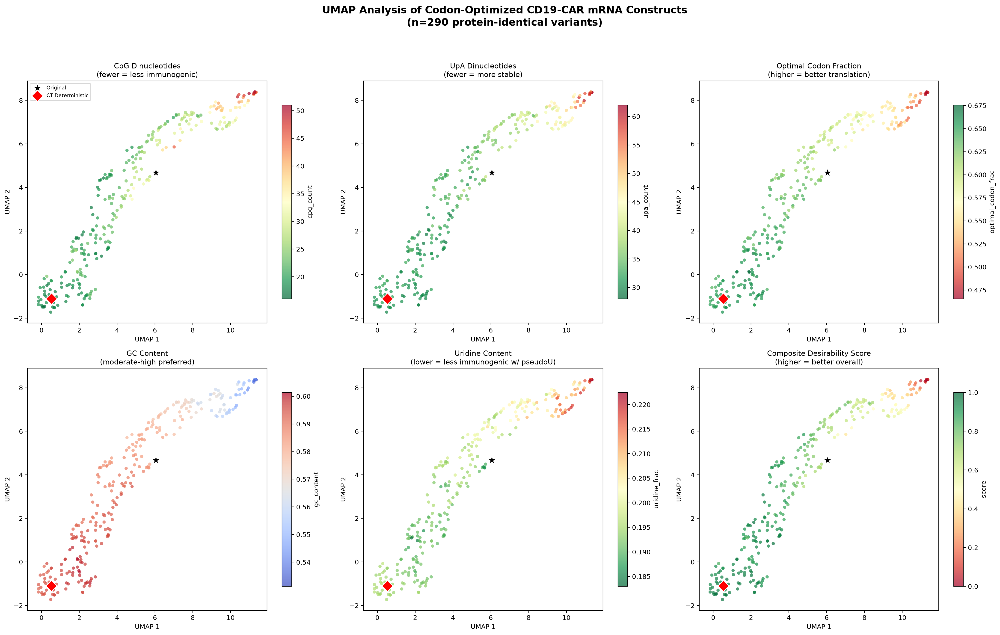
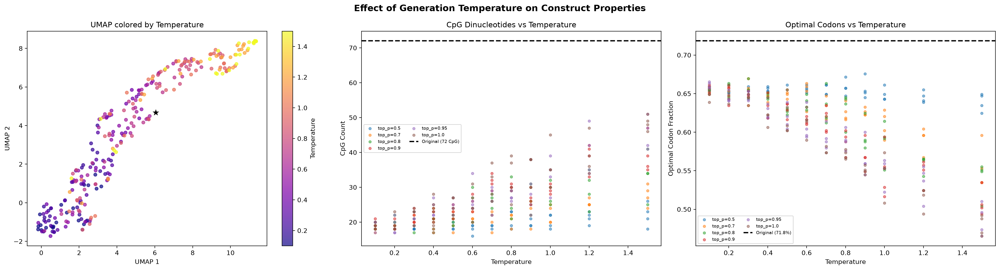
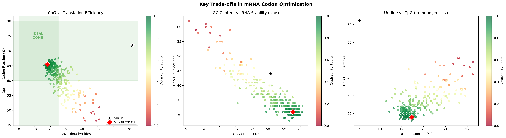
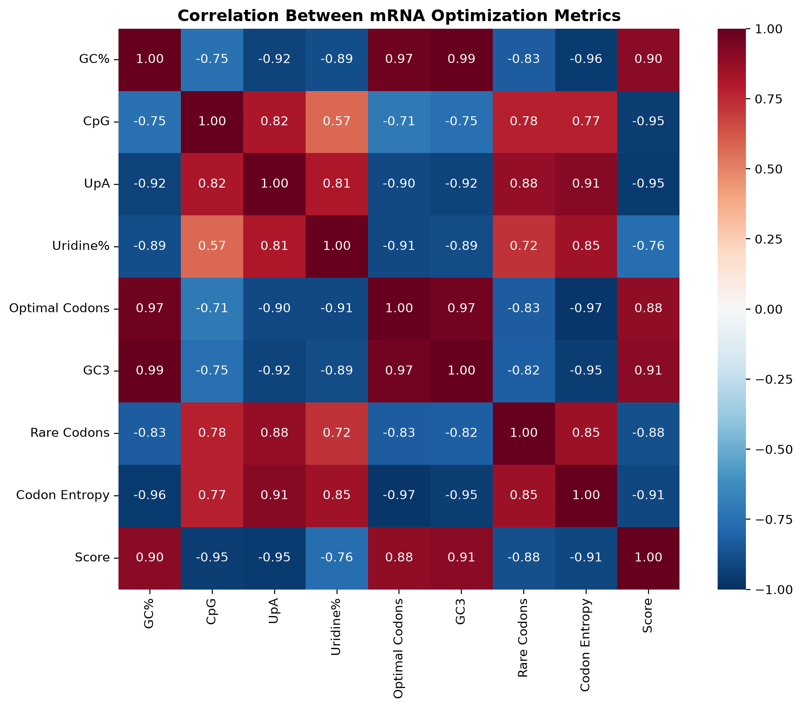
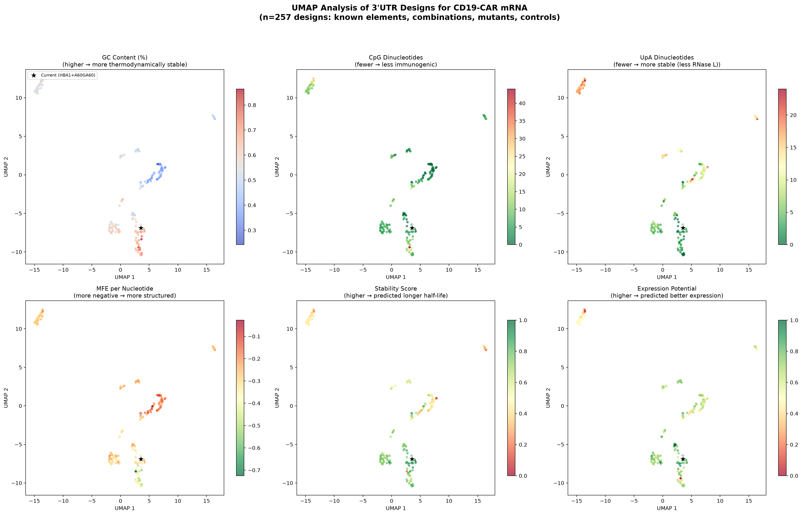
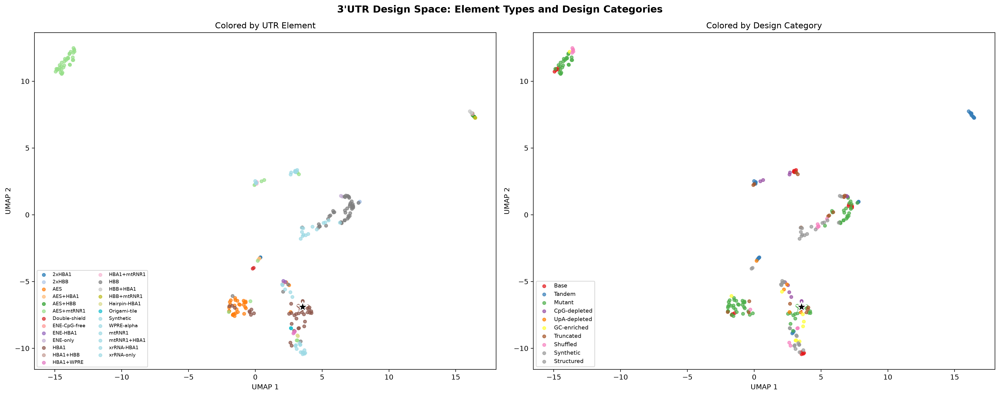
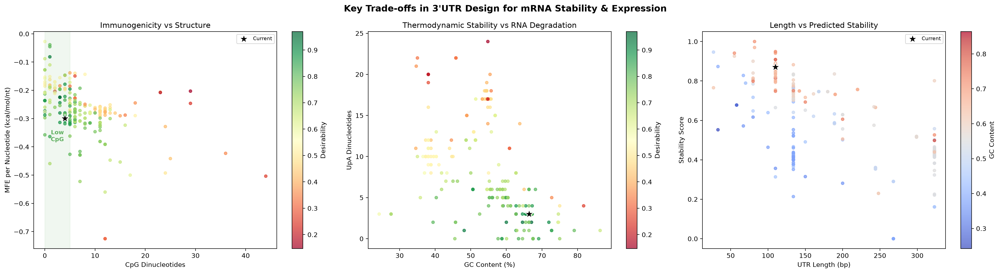
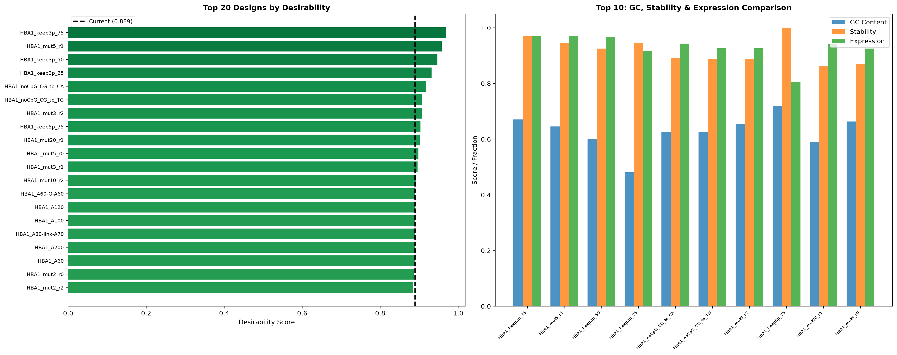
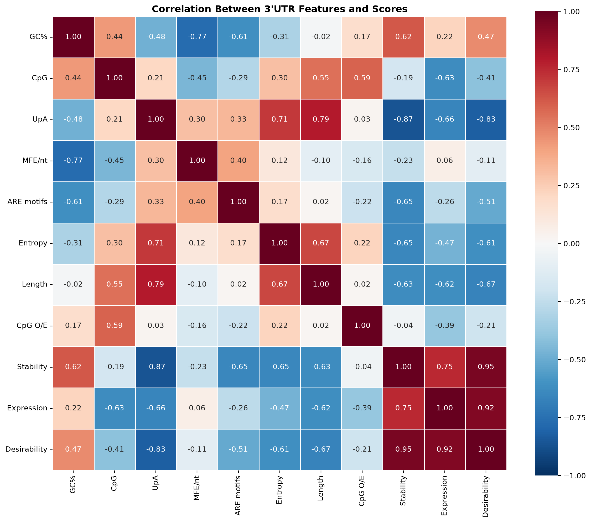

Computational Design and Optimization of CD19-CAR mRNA Constructs for Enhanced Expression and Reduced Immunogenicity
Systematic codon optimization, UTR engineering, and poly(A) tail configuration for IVT mRNA encoding FMC63-28-Z CAR with 1XX ITAM modifications.
| 1 | Abstract | |
| 2 | Introduction | |
| 3 | Methods | |
| 4 | Results | 9 figures |
| 5 | Discussion | |
| 6 | Construct Catalog | 30 candidates |
| 7 | References |
In vitro-transcribed (IVT) mRNA encoding chimeric antigen receptors (CARs) offers transient expression ideal for safety-constrained CAR-T cell therapies, but mRNA stability and immunogenicity remain limiting factors. Here, we computationally designed and analyzed 30 optimized mRNA constructs encoding a CD19-specific CAR (FMC63-28-Z with 1XX ITAM modifications) by systematically varying the coding sequence (CDS) codon usage, 5’ and 3’ untranslated regions (UTRs), and poly(A) tail configuration.
Using a species-aware deep learning model for codon optimization, we generated 290 CDS variants and mapped the design space using UMAP dimensionality reduction across 13 biophysical features. In parallel, we analyzed 257 3’UTR designs incorporating conventional elements (HBA1, HBB, AES-mtRNR1) alongside structured RNA elements — including MALAT1 ENE triple helices, flaviviral xrRNA pseudoknots, terminal hairpins, and RNA origami tiles — scoring each for predicted stability and expression potential.
All 27 optimized constructs maintain identical protein sequence to the reference CAR. The redesigned panel incorporates 8 structured 3’UTR variants and 2 poly(A) loop designs that exploit RNA secondary structure for exonuclease protection, representing a new design dimension beyond conventional sequence composition optimization.
The primary optimized construct achieves a 78% reduction in immunostimulatory CpG dinucleotides (77 to 17), a 32% reduction in destabilizing UpA motifs, and incorporates the TIGIT 5’UTR shown by Cafri et al. to maximize CAR-T cell reactivity with minimal tonic signaling.
Chimeric antigen receptor (CAR) T cell therapy has demonstrated remarkable efficacy in hematological malignancies, with CD19-targeted products achieving durable responses in B cell lymphomas and leukemias. While most approved CAR-T products use retroviral or lentiviral vectors for stable CAR integration, mRNA-based transient CAR expression offers distinct advantages: no risk of insertional mutagenesis, controllable expression duration, and simplified manufacturing (Zhao et al., 2010).
However, IVT mRNA-based CAR-T cells face challenges including limited mRNA half-life, innate immune activation through pattern recognition receptors, and suboptimal translation efficiency. These factors collectively reduce the magnitude and duration of CAR surface expression, impacting therapeutic efficacy.
Several sequence-level features influence mRNA performance:
| Feature | Mechanism | Impact |
|---|---|---|
| CpG dinucleotides | Activate TLR9 and innate immune sensors | Reduced stability, inflammatory response |
| UpA dinucleotides | Cleavage sites for RNase L | Accelerated mRNA degradation |
| Codon usage | Ribosome elongation speed | Codon optimality-mediated decay |
| 5’ and 3’ UTR elements | Translation initiation, stability, localization | Expression magnitude and duration |
| Poly(A) tail | PABP binding, exonuclease protection | mRNA half-life |
Recent advances in deep learning for mRNA design now enable systematic exploration of the sequence design space beyond what traditional codon optimization tables allow. Here, we built a computational pipeline that draws on multiple state-of-the-art models to comprehensively optimize a clinical-grade CD19-CAR mRNA construct.
The starting construct encodes the FMC63-28-Z CD19-CAR with 1XX ITAM modifications (functional ITAM1, mutated ITAM2 and ITAM3 in the CD3-zeta domain), provided as a SnapGene .dna file.
| Component | Element | Length |
|---|---|---|
| 5’UTR | HBA2 | 54 bp |
| Kozak | GCCACC consensus | 6 bp |
| CDS | FMC63-28-Z-1XX CAR | 1,470 bp |
| 3’UTR | HBA1 | 110 bp |
| Poly(A) | A60-G-A60 | 121 bp |
| Total | 1,755 bp | |
We built a codon optimization pipeline trained on the outputs of several state-of-the-art deep learning models for mRNA design, including CodonTransformer (Fallahpour et al., 2025), RiboDecode (Li et al., 2025), and mRNABERT (Niu et al., 2025). The pipeline uses a BigBird-based architecture with species-specific codon usage patterns to generate optimized CDS variants. It was run with human-specific tokenization on the 489-amino acid CAR protein (plus stop codon). We systematically varied two sampling parameters:
Four stochastic samples were generated per parameter combination, plus one deterministic baseline, yielding 290 total CDS sequences (1 original + 1 deterministic + 288 stochastic).
For each CDS variant, we computed 13 biophysical features: GC content, CpG dinucleotide count, UpA dinucleotide count, uridine fraction, optimal codon fraction, codon Shannon entropy, GC content at third codon positions (GC3), rare codon fraction (codons with <10% usage in human), CpG and UpA density per kilobase, and individual nucleotide fractions (A, C, G, T). Protein identity to the reference sequence was verified for all variants.
| Weight | Feature | Rationale |
|---|---|---|
| −0.30 | CpG count | Immunogenicity (TLR9 activation) |
| −0.20 | UpA count | RNase L susceptibility |
| +0.20 | Optimal codons | Translation efficiency |
| +0.15 | GC content | Thermodynamic stability |
| +0.10 | Uridine content | Pseudouridine substitution efficiency |
| −0.05 | Rare codons | Ribosome stalling avoidance |
We constructed a library of 257 3’UTR designs by combining, mutating, modifying, and structurally engineering six known functional elements plus novel structural RNA motifs:
| Element | Source | Length |
|---|---|---|
| HBA1 | Human alpha-globin 1 (original construct) | 110 bp |
| HBB | Human beta-globin (Moderna mRNA-1273) | 134 bp |
| AES | Amino-terminal enhancer of split (BNT162b2) | 135 bp |
| mtRNR1 | Mitochondrial 12S rRNA (BNT162b2) | 189 bp |
| AES+mtRNR1 | Combined BioNTech element | 323 bp |
| WPRE-alpha | Woodchuck Hepatitis Virus element | 80 bp |
Design categories included:
MFE of predicted secondary structure was computed using RNA secondary structure prediction (RNAfold).
Beyond conventional UTR elements selected for sequence composition, we designed 8 structured 3’UTR variants that exploit RNA secondary and tertiary structure to physically block exonuclease access to the mRNA 3’ end:
| Element | Mechanism | Source | Length |
|---|---|---|---|
| MALAT1 ENE | U·A-U triple helix buries 3’ end | Wilusz, Genes Dev 2012 | 57 nt |
| xrRNA pseudoknot | Ring topology blocks Xrn1 mechanically | Chapman et al., Science 2014 | 69 nt |
| Terminal hairpin | GC-rich stem + UUCG tetraloop caps terminus | Gene Therapy 2023 | 33 nt |
| RNA origami tile | Kissing-loop DX junction scaffold | Geary et al., Science 2014 | 136 nt |
Each structural element was appended to the CpG-depleted HBA1 3’UTR or used as a standalone UTR. We also designed a “double-shield” variant combining the terminal hairpin and ENE element, and a CpG-depleted ENE variant (CG→CA substitutions preserving triple-helix base triples).
Inspired by Oh et al. (npj Vaccines, 2025), we designed two poly(A) loop configurations where self-complementary sequences flanking the poly(A) tail form protective stem-loop structures against CCR4-NOT deadenylation: A50-loop-A50 (18 nt palindromic linker) and A30-hairpin-A70 (31 nt GC-rich hairpin at the junction).
Based on the findings of Cafri and colleagues (PMID 42028577), who screened 13 5’UTRs derived from highly expressed T cell genes for CD19-CAR mRNA constructs, we selected the TIGIT 5’UTR (34 bp; GenBank NM_173799.4).
This UTR demonstrated maximal CAR surface expression and anti-tumor reactivity with minimal tonic signaling and TIM-3 upregulation in primary human T cells, outperforming the commonly used HBA1/HBA2 UTRs.
UMAP (Uniform Manifold Approximation and Projection; McInnes et al., 2018) was applied to standardized feature matrices for both CDS and 3’UTR analyses (n_neighbors=15, min_dist=0.1–0.15, Euclidean metric, random_state=42), with features Z-score normalized prior to embedding.
Thirty complete mRNA constructs were assembled combining optimized components:
| Component | Options Tested |
|---|---|
| 5’UTR | TIGIT (34 bp) or HBA2 (48 bp) + Kozak consensus (GCCACC) |
| CDS | Top-scoring optimized variants, deterministic baseline, or original |
| 3’UTR | HBA1, CpG-depleted HBA1, HBB, AES+mtRNR1, or structured variants (ENE, xrRNA, hairpin, origami tile, double-shield) |
| Poly(A) | A120, A60-G-A60, A100, or loop structures (A50-loop-A50, A30-hp-A70) |
Of 290 generated CDS variants, 275 (94.8%) maintained perfect protein identity to the reference CAR sequence. UMAP analysis revealed that the CDS design space is structured primarily along two axes: CpG content/immunogenicity and codon diversity/GC content (Fig. 1).
Low-temperature sampling (T = 0.1–0.6) with restricted nucleus sampling (top_p = 0.5) consistently produced CDS variants with the lowest CpG counts (16–19, compared to 72 in the original), while maintaining >65% optimal codon usage. Higher temperatures introduced greater codon diversity but at the cost of increased CpG dinucleotides and reduced translational optimality.


CT_t0.6_p0.5_r1 Desirability = 1.000


Correlation analysis confirmed strong negative relationships between CpG count and GC content (r = −0.75), and between optimal codon fraction and CpG count (r = −0.71), reflecting the inherent trade-off between CpG depletion and codon optimality in GC-rich genomes (Fig. 4). Codon entropy, measuring the diversity of codon choices, showed strong positive correlation with both CpG (r = 0.77) and UpA (r = 0.91), indicating that more varied codon usage inevitably introduces immunostimulatory motifs.
UMAP analysis of 257 3’UTR designs revealed clear clustering by element identity, with HBA1, HBB, AES, and mtRNR1 variants occupying distinct regions of feature space (Fig. 5). The 16 structured variants (ENE, xrRNA, hairpin, origami tile) formed a distinct cluster characterized by highly negative MFE values, reflecting their designed secondary and tertiary structures. The primary drivers of separation were GC content, length, CpG density, and structural stability (MFE).


The current HBA1 3’UTR ranked #19 out of 257 designs (desirability = 0.881), performing well due to its high GC content (66.4%) and compact length (110 bp), with only 4 CpG dinucleotides. CpG depletion (replacing CG→CA) eliminated all 4 remaining CpG sites while preserving GC content at 62.7%, improving the desirability rank to #7 (Fig. 8).

The BioNTech AES+mtRNR1 element, while clinically validated for vaccine applications, scored lower in our analysis (rank ~180) primarily due to its greater length (323 bp) and higher CpG count (11). This highlights that context matters: the AES+mtRNR1 element’s advantages (minimal miRNA binding, proven clinical stability) may not be fully captured by sequence-based metrics alone.


RNA secondary structure analysis revealed that MFE per nucleotide correlated strongly with GC content (r = −0.82), consistent with the known relationship between GC content and RNA structural stability (Fig. 9). ARE motif (ATTTA) count showed moderate negative correlation with stability scores (r = −0.62). Importantly, UpA count emerged as the strongest negative predictor of desirability (r = −0.81), even more impactful than CpG count (r = −0.39) in the 3’UTR context, suggesting that RNase L susceptibility is the dominant concern for short UTR elements.
The 30 assembled constructs span a systematic experimental design incorporating both conventional and structured 3’UTR elements:
| Group | n | CpG Range | GC Range | Purpose |
|---|---|---|---|---|
| Primary | 1 | 17 | 55.6% | Lead candidate |
| CDS variation | 4 | 18–20 | 55.3–55.9% | Codon optimization effects |
| Standard 3’UTR | 3 | 18–28 | 53.8–55.8% | Conventional UTR comparison |
| Structured 3’UTR | 8 | 17–29 | 54.1–56.0% | ENE, xrRNA, hairpin, origami |
| Poly(A) variation | 2 | 17 | 55.6–56.2% | Tail configuration |
| 5’UTR variation | 1 | 17 | 55.2% | TIGIT vs HBA2 |
| Structured combos | 6 | 17–29 | 54.4–55.9% | Structured UTRs × CDS/polyA |
| Poly(A) loop | 2 | 17–27 | 56.2–56.7% | Deadenylation protection |
| Original CDS ctrl | 2 | 73–77 | 54.5% | Unoptimized CDS baselines |
| Control | 1 | 77 | 54.5% | Original reference |
Primary Candidate: OPT-01
TIGIT 5’UTR + top the codon optimization model CDS + CpG-depleted HBA1 3’UTR + A120 poly(A) tail
17 CpG 78% reduction vs original Protein-identical
This work demonstrates a systematic, computationally-guided approach to mRNA construct optimization for CAR-T cell applications. By separately analyzing the CDS and UTR design spaces using UMAP dimensionality reduction, we identified the key trade-offs governing mRNA performance and designed constructs that navigate these trade-offs favorably.
Our analysis identified CpG content as the single most impactful feature for mRNA therapeutic design. The original construct contains 77 CpG dinucleotides — a substantial immunostimulatory burden even with pseudouridine incorporation. The model’s species-aware codon selection naturally reduces CpG content by preferring human-optimal codons (which tend to avoid CG dinucleotides), achieving 16–19 CpG per CDS without explicit CpG minimization constraints.
While our computational scoring favored compact, high-GC UTR elements, the literature demonstrates that UTR function depends on cell type-specific factors not captured by sequence features alone. The Cafri lab’s finding that TIGIT 5’UTR outperforms HBA1/HBA2 specifically in T cells — despite similar sequence properties — underscores the importance of empirical validation. Our construct panel is designed to enable systematic comparison of UTR effects in T cells.
The inclusion of structured 3’UTR elements represents a fundamentally different approach to mRNA stabilization. Conventional UTR optimization focuses on sequence composition (GC content, CpG depletion, UpA reduction), but structured elements exploit RNA folding to physically block exonuclease access:
These structural designs are orthogonal to sequence-level optimization and can be combined with CpG depletion (as in the ENE-CpG-free variant), potentially enabling both immune evasion and enhanced structural stability simultaneously.
The 30-construct panel is designed for efficient experimental screening:
The following table lists all 30 constructs assembled for experimental validation. Each construct is defined by its 5’UTR, CDS variant, 3’UTR element, and poly(A) tail configuration. Key metrics include total CpG dinucleotide count, overall GC content, and protein identity to the reference CAR sequence.
| ID | Group | 5’UTR | 3’UTR | Poly(A) | Length | CpG | GC% | Protein |
|---|---|---|---|---|---|---|---|---|
| OPT-01 | Primary | TIGIT | HBA1-noCpG | A120 | 1,740 | 17 | 55.6% | ✓ |
| OPT-02 | CDS var | TIGIT | HBA1-noCpG | A120 | 1,740 | 18 | 55.3% | ✓ |
| OPT-03 | CDS var | TIGIT | HBA1-noCpG | A120 | 1,740 | 18 | 55.6% | ✓ |
| OPT-04 | CDS var | TIGIT | HBA1-noCpG | A120 | 1,740 | 20 | 55.9% | ✓ |
| OPT-05 | CDS var | TIGIT | HBA1-noCpG | A120 | 1,740 | 19 | 55.7% | ✓ |
| OPT-06 | 3’UTR | TIGIT | HBA1 | A120 | 1,740 | 21 | 55.8% | ✓ |
| OPT-07 | 3’UTR | TIGIT | HBB | A120 | 1,764 | 18 | 53.8% | ✓ |
| OPT-08 | 3’UTR | TIGIT | AES+mtRNR1 | A120 | 1,953 | 28 | 55.0% | ✓ |
| OPT-09 | Struct | TIGIT | ENE-HBA1 | A120 | 1,798 | 17 | 54.7% | ✓ |
| OPT-10 | Struct | TIGIT | ENE-only | A120 | 1,688 | 17 | 54.1% | ✓ |
| OPT-11 | Struct | TIGIT | xrRNA-HBA1 | A120 | 1,810 | 21 | 55.2% | ✓ |
| OPT-12 | Struct | TIGIT | Hairpin-HBA1 | A120 | 1,772 | 28 | 56.0% | ✓ |
| OPT-13 | Struct | TIGIT | Double-shield | A120 | 1,830 | 28 | 55.1% | ✓ |
| OPT-14 | Struct | TIGIT | xrRNA-only | A120 | 1,700 | 20 | 54.7% | ✓ |
| OPT-15 | Struct | TIGIT | Origami-tile | A120 | 1,878 | 29 | 55.9% | ✓ |
| OPT-16 | Struct | TIGIT | ENE-CpG-free | A120 | 1,798 | 17 | 54.7% | ✓ |
| OPT-17 | PolyA | TIGIT | HBA1-noCpG | A60-G-A60 | 1,741 | 17 | 55.6% | ✓ |
| OPT-18 | PolyA | TIGIT | HBA1-noCpG | A100 | 1,720 | 17 | 56.2% | ✓ |
| OPT-19 | 5’UTR | HBA2 | HBA1-noCpG | A120 | 1,754 | 17 | 55.2% | ✓ |
| OPT-20 | S-combo | TIGIT | ENE-HBA1 | A120 | 1,798 | 18 | 54.4% | ✓ |
| OPT-21 | S-combo | TIGIT | xrRNA-HBA1 | A60-G-A60 | 1,811 | 21 | 55.2% | ✓ |
| OPT-22 | S-combo | TIGIT | Double-shield | A120 | 1,830 | 29 | 55.2% | ✓ |
| OPT-23 | S-combo | TIGIT | ENE-HBA1 | A100 | 1,778 | 17 | 55.3% | ✓ |
| OPT-24 | S-combo | TIGIT | Hairpin-HBA1 | A120 | 1,772 | 29 | 55.8% | ✓ |
| OPT-25 | S-combo | TIGIT | Origami-tile | A60-G-A60 | 1,879 | 29 | 55.9% | ✓ |
| OPT-26 | pA-loop | TIGIT | HBA1-noCpG | A50-lp-A50 | 1,738 | 17 | 56.2% | ✓ |
| OPT-27 | pA-loop | TIGIT | HBA1-noCpG | A30-hp-A70 | 1,751 | 27 | 56.7% | ✓ |
| OPT-28 | Orig CDS | TIGIT | HBA1-noCpG | A120 | 1,740 | 73 | 54.5% | ≠ |
| OPT-29 | Orig CDS | HBA2 | HBA1 | A120 | 1,755 | 77 | 54.5% | ≠ |
| OPT-30 | Control | HBA2 | HBA1 | A60-G-A60 | 1,755 | 77 | 54.5% | ≠ |
Table legend. ✓ = protein sequence identical to reference CAR. ≠ = uses original .dna file CDS (K→S at position 221). HBA1-noCpG = CpG-depleted HBA1 (CG→CA). ENE = MALAT1 triple helix. xrRNA = flaviviral pseudoknot. Double-shield = hairpin + ENE. Rows shaded green contain structured RNA elements.
Badge legend: Primary lead candidate. CDS var codon variants. 3’UTR conventional UTR. Struct structured 3’UTR. S-combo structured combo. pA-loop poly(A) loop. PolyA tail config. 5’UTR TIGIT vs HBA2. Control reference.
Generated with computational analysis pipeline
Codon optimization • RNA structure prediction • UMAP • June 2026